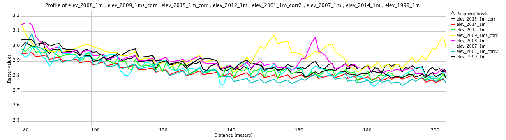
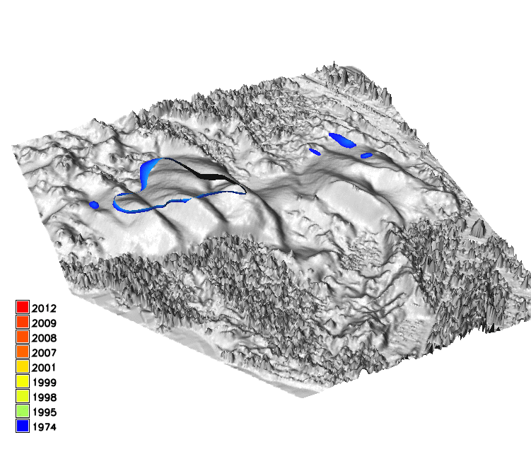
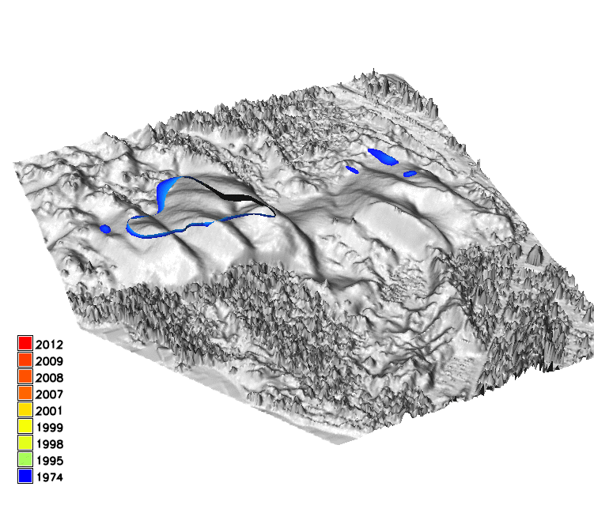
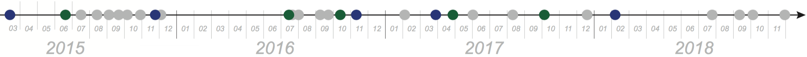
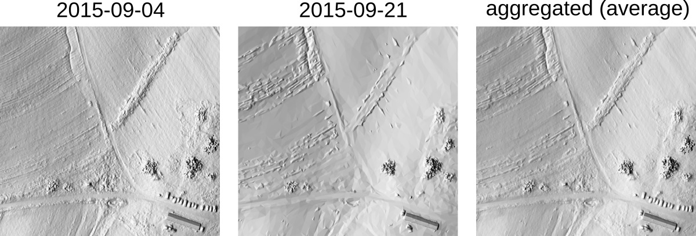
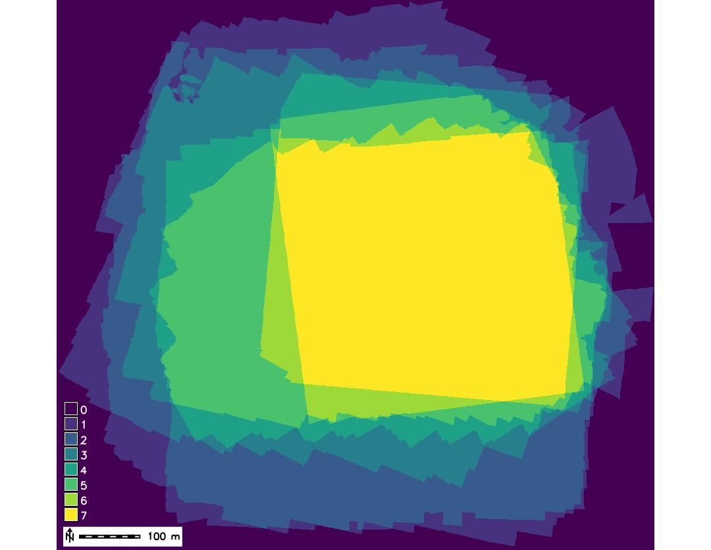
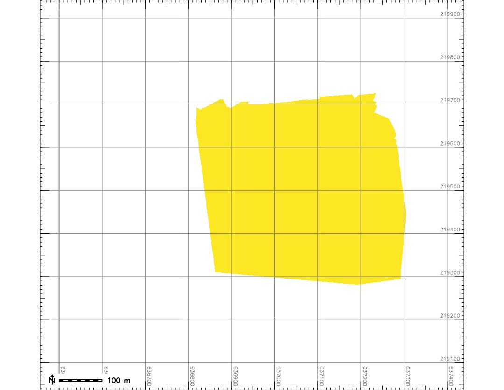

Dynamic spatial phenomena
Multitemporal Data Handling in TGRASS
Helena Mitasova, Anna Petrasova, Vaclav Petras
GIS714 Geosimulations NCSU
Learning objectives
- observation time series and multitemporal data
- dynamic simulations
- managing geospatial multitemporal data
- dynamic visualization
Observation time series and multitemporal data
Definitions:
- systematic, consistent monitoring: time series
- data collected over the same location but for different purpose and/or using different technologies: multitemporal data
Observation time series and multitemporal data
Objectives:
- gain understanding of dynamics / change / evolution of studied phenomenon or system
- provide input for diagnostic or predictive modeling
Your observation data
Describe your time series or multitemporal data:
- source:
in situ point measurements, satellite, airborne/UAS imagery, polygon-based data ... - spatial and temporal distribution, resolution, scale:
image(s) at regular time step, event-based acquisition, static points, moving objects,... - management of your data:
spreadsheet, spatio-temporal database - processing, analysis and visualization
Monitoring dynamic processes
- How fast do your variables change?
- Do your data capture the full dynamics or snapshots?
- Is the process multiscale?
- What temporal scales are captured by your data?
- What is driving the studied process dynamics?
- What data you have to capture the driving forces?
Discuss temporal properties of your data and answer these questions in your project proposal
Dynamic models from monitoring data:
time series and multitemporal examples
Observation time series
Annual dynamics of 30yr monthly precipitation in South America
$p_i = f_i(x,y), i=1, ... 12$
bi-variate interpolation from 130 point data

aggregated over each month, averaged over 30 years
Observation time series
Annual dynamics of monthly precipitation in North Carolina for the years 2004,2005,2006
aggregated over each month, subset from 2000-2012 time series used in the assignemnt
Model and Observation time series
Real-time atmospheric and ocean data visualization, combines observations and models earth
Observation multitemporal data
Multitemporal point clouds with variable point distribution, densities and accuracies


Data sources: digitized contours, photogrammetry mass points, lidar, GPS
Observation multitemporal data
Jockey's Ridge 1974 - 2017:
40 years of southward migration and landform change
$z_i = f_i(x,y), i=1, ... n$:
bi-variate interpolation of DEMs from point cloud snapshots

Note that the visualization does not respect the variable time interval
Multitemporal DEM 1974 - 2017
Multitemporal Planet imagery
Satellite imagery (3m resolution), Sep. 2017 - July 2018
Planet: constellation of Earth-imaging micro satellites providing daily observations for entire Earth at 1m resolution
Observation multivariate time series
- Chesapeake bay monthly N concentration measurements in 1993 - 3D distribution of sampling sites
- $w = f(x,y,z,t)$: multivariate (3D space-time) interpolation reveals seasonal trends, influx of N in spring and decrease in summer


Observation multitemporal data
Sampling well sites: scattered in space and time

Observation multitemporal data
- groundwater pollution over 10 years $w = f(x,y,z,t)$, space-time interpolation of chemical concentrations data
- using scattered space-time point data to create a continuous space-time model of plume evolution

Dynamic models from simulations
- Results of numerical modeling
- Well defined time step: depends on application, input data and numerical method
- Challenge: coupled models of processes with different time steps
Solar radiation
Simulation of solar radiation during one day (summer solstice) with 30 minute time step at 1m spatial resolution

Ultra-high resolution water flow
- Time step depends on flow velocity and resolution
- UAS-based surveys: cm-resolution DEMs
- Captures impact of microtopography, time step is fraction of a second

Jeziorska et al., 2016, Overalnd flow analysis using time series of UAS-derived elevation models
Fire spread
Simulation of fire spread at 1m spatial resolution with time step dependent on wind speed, generally in minutes

Managing time series and multitemporal data
Temporal data framework in GRASS GIS
- designed for massive series of satellite imagery or modeling outputs
- efficient processing, management and analysis of space-time data sets
- space-time dataset is a set of maps registered in a temporal database
- individual maps with assigned time-stamp represent the state of a dynamic variable at a given time
Time stamp type
Time stamp assigns time to an individual map in the space-time data set- time instant - snapshot at a given time expressed as absolute time:
2013-10-15 13:00:00 (date time format) - time interval - defined by start and end time: time period of a day, a month, or a year
- example: a single UAS survey represents a snapshot (e.g. elevation at the time of survey) which can be agreggated into time intervals (e.g. monthly average elevation)
- relative time expressed as value (e.g. years 1, 2, 3 or interval 3 years, useful also for non-temporal series)
Time stamp type
Timeline illustrates different types of time stamp and the temporal relationship between the data sets- time instant - snapshot is shown as points
- time interval - defined by start and end time, shown as thick line, examples show intervals with gaps and overlapping intervals
Space-Time dataset types
- space-time raster data set: strds
- space-time vector data set (points, lines or areas): stvds
- space-time 3D raster data set: str3ds
subset of the vector (points) and raster (DEMs) space-time data sets for Jockey's Ridge
Working with a space-time data set
Given a set of GRASS GIS maps with assigned time:
- create empty space-time dataset
- register the existing maps in this space-time dataset
- check/verify the properties of the dataset
- process, analyze, and visualize the space-time data
Register maps and check data timeline
- Given a set of DEMs for Jockey's Ridge dunes:
- photogrammetry (1974, 1995, 1998),
- lidar (1999, 2001, 2007, 2008, 2009, 2012, 2015, 2017),
- structure from motion from UAS imagery (2016, 2018)


Mapping common spatial extent
Analyze spatial coverage of DEMs in the strds:- Count map: number of maps where a grid cell has non-null value
- Intersection map: grid cells with non-null values from all maps in strds
Corrections for systematic errors
Using stable features (e.g. roads) to identify potential systematic errors and apply corrections

Critical for computing coastal erosion but also for growth of vegetation and other applications
Visualize DEMs
Visualize the Jockey's Ridge harmonized strds as a 3D animation masked by the intersection map:
Note that the visualization does not respect the variable time interval
Basic multitemporal DEM analysis
Per cell statistics computed for each cell over time:
- mean and standard deviation
- min, max value and range
- time at minimum, time at maximum
- linear regression: slope, offset, regr. coefficient
Basic multitemporal DEMs analysis
Given $n$ DEM snaphots $z(i,j,t_k) \quad k=1, ..., n$, per-cell operation can be used to derive:
- Core surface: $z_{core}(i,j)=\min_k z(i,j,t_k) \quad k=1, ..., n$
- Envelope surface: $z_{env}(i,j)=\max_k z(i,j,t_k) \quad k=1, ..., n$
- Time of min: $t_{min} (i,j) = t_p, \quad {\rm where} \quad z(i,j,t_p) = z_{core}(i,j)$
- Time of max: $t_{max} (i,j) = t_l, \quad {\rm where} \quad z(i,j,t_l) = z_{env}(i,j) $
Basic multitemporal DEM analysis: core, envelope
East Jockey's Ridge dune: (a) time of elevation maximum map, (b) core, envelope and DEM surfaces

Impact of storms: Changes in structures
Credit: Weather news, House relocation hookedonhouses.net
Multitemporal DEMs: analysis
Discrete changes - buildings lost or new:$z_{env}(i_c,j_c) - z_{core}(i_c,j_c) > h_b$
- Lost structure: $t_{max} (i_l,j_l) < t_{min} (i_l,j_l)$
- New structure: $t_{max} (i_l,j_l) > t_{min} (i_l,j_l)$
- Shoreline band - shoreline from core and envelope

Basic time series analysis: regression
- applies to systematic monitoring with longer time series, with rate of change close to linear
- per cell linear regression analysis: map of regression slope (rate of change)

Landform change: contours time series
Dune gradually split into smaller parabolic dunes:16m and 20m contours capture change but are hard to read

Space-Time cube visualization
DEM time series is converted into space-time voxel model in TGRASS and evolution of a contour is represented as isosurface: 16m and 20m
 

Space-Time cube visualization
Pedestrian density from webcams

Petrasova A., Hipp J. A., Mitasova H. 2019. Visualization of Pedestrian Density Dynamics Using Data Extracted from Public Webcams. In: ISPRS Int. J. Geo-Inf, 8(12).
Map algebra for time series
- map algebra expression is applied to each map in strds at each grid cell
- output is a new strds which is registered as a new space-time dataset
- this is different (and much simpler) from temporal map algebra
STAC: Spatio-Temporal Asset Catalog
Discover and work with spatio-temporal data using a new Common language to describe geospatial information Intro to STAC
Summary
- we defined multitemporal data and time series
- we discussed temporal resolution and dynamic processes
- we explored examples of models from observation data
- we explored examples of models from numerical simulations
- we introduced GRASS GIS temporal framework
- we analyzed multitemporal elevation data
Bonus slides: multitemporal UAS DSMs
- UAS-based DSM space-time raster data set and ts timeline
- strds with aggregated september data (average)

 
Bonus slides: multitemporal UAS DSMs
Count and intersection
 
Bonus slides: multitemporal UAS DSMs
- core represents bare fields
- envelope represents maximum measured crop height

Bonus slides: multitemporal UAS DSMs
zoomed in envelope (max elevation) for the time series shows all areas where cars parked